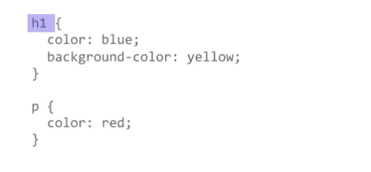
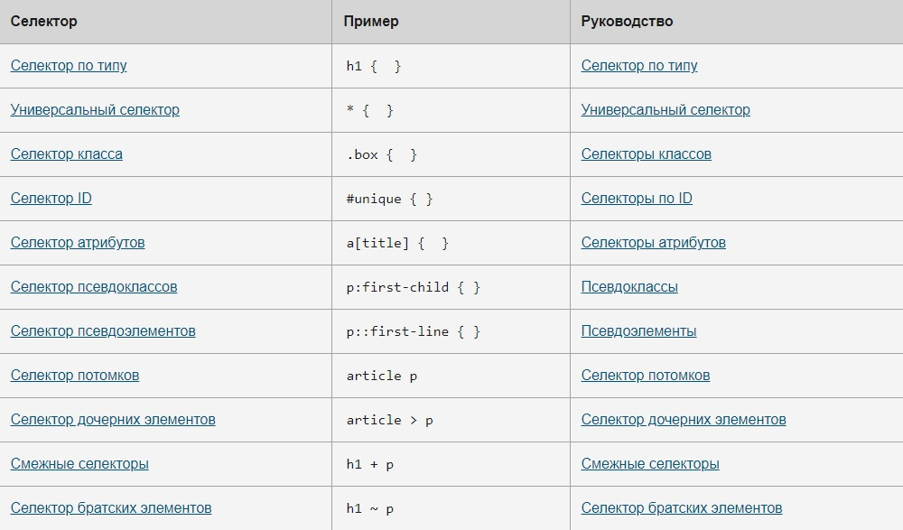

Что такое селекторы?
Вы уже встречались с селекторами. Это выражения, которые говорят браузеру, к какому элементу HTML нужно применить те или иные свойства CSS, определённые внутри блока объявления стиля.

Ранее вы встречали несколько разных селекторов и узнали, что существуют селекторы, которые по-разному относятся к документу, — например используя элемент h1 или класс .special.
В CSS селекторы определяются в спецификации CSS-селекторов; как и другие части CSS, нужно поддерживать их работу в браузерах. Большинство селекторов, которые вы встретите, определены в Спецификации селекторов 3 уровня, где вы сможете найти всю информацию о поддержке селекторов в браузерах.
Несколько селекторов
Несколько селекторов, использующих одни и те же таблицы стилей, можно объединить в лист селекторов: правило будет добавлено к каждому селектору. К примеру, у меня есть одинаковые правила для заголовка h1 и класса .special.; я могу написать их так:
h1 {
color: blue;
}
.special {
color: blue;
}
А могу написать короче — просто отделив селекторы запятыми:
h1, .special {
color: blue;
}
Пробел можно вставлять до или после запятой. Ещё удобнее писать каждый селектор с новой строки:
h1,
.special {
color: blue;
}
При объединении селекторов таким образом, при условии если хоть один селектор будет недействительным, всё правило будет пропущено.
В примере ниже правило для селектора класса не будет работать, в то время как h1 будет стилизован.
h1 {
color: blue;
}
..special {
color: blue;
}
Но если мы объединим селекторы, правило не применится ни к h1, ни к классу: оно считается недействительным.
h1, ..special {
color: blue;
}
Типы селекторов
Понимание того, какой именно селектор вам нужен, очень помогает подобрать подходящий элемент. Сейчас мы разберём разные виды селекторов.
Селекторы тегов, классов и идентификаторов
К этой группе относятся селекторы HTML-элементов, таких как <h1>.
h1 { }
К группе относятся и селекторы классов:
.box { }
или селекторы идентификаторов (ID):
#unique { }
Селекторы атрибутов
Эта группа селекторов позволяет выбирать селекторы, основываясь на наличии у них конкретного атрибута элемента:
a[title] { }
или основываясь на значении атрибута:
a[href="https://example.com"] { }
Псевдоклассы, псевдоэлементы
К этой группе относятся псевдоклассы, которые стилизуют определённое состояние элемента. Псевдокласс :hover, например, применяет правило, только если на элемент наведён курсор мыши
a:hover { }
К группе ещё относятся псевдоэлементы, которые выбирают определённую часть элемента (вместо целого элемента). Например, ::first-line всегда выбирает первую строку внутри элемента (абзаца <p> в нашем случае), действуя, как если бы тег <span> оборачивал первую строку, а затем был стилизован.
p::first-line { }
Комбинаторы
И последняя группа селекторов: она позволяет объединять селекторы, чтобы было легче находить конкретные элементы внутри документа. В следующем примере мы отыскали дочерний элемент <article> с помощью комбинатора дочерних элементов (>):
article > p { }
Справка о селекторах
В таблице ниже — доступные сейчас селекторы, а также ссылки к страницам, где рассказывается, как использовать каждый из них. Я также добавил ссылки на страницы MDN для каждого селектора, чтобы вы могли проверить, поддерживаются ли они браузерами.

Примеры
Селектор по типу
element { style properties }
CSS
span {
color: DodgerBlue;
}
HTML
<span>Здесь тег span с каким-то текстом.</span> <p>Здесь тег p с каким-то текстом.</p>
Результат
Здесь тег p с каким-то текстом.
Селекторы по классу
.classname { style properties }
CSS
.classy {
color: DodgerBlue;
}
HTML
<p class="classy">Здесь p с каким-то текстом.</p> <p> А тут другой p.<p>
Результат
Здесь p с каким-то текстом.
А тут другой p.
Селекторы по ID
#id_value { style properties }
CSS
#identified {
color: DodgerBlue;
}
HTML
<p id="identified">Здесь p с каким-то текстом.</p> <p> А тут другой p.<p>
Результат
Здесь p с каким-то текстом.
А тут другой p.
Селектор потомков
selector1 selector2 {стили }
CSS
p {
color: green;
}
div p {
color: DodgerBlue;
}
HTML
<div> <p> Я p внутри div </p> </div> <p> Я p снаружи div </p>
Результат
Я p внутри div
Я p снаружи div
Селектор дочерних элементов
selector1 > selector2 { style properties }
CSS
.section p {
color: pink;
}
.section > p {
color: green;
}
HTML
<div class="section"> <p>Первый уровень.</p> <div class="section__text"> <p>Второй уровень.</p> <div> <p>Третий уровень.</p> </div> </div> <p>Первый уровень.</p> </div>
Результат
Первый уровень.
Второй уровень.
Третий уровень.
Первый уровень.